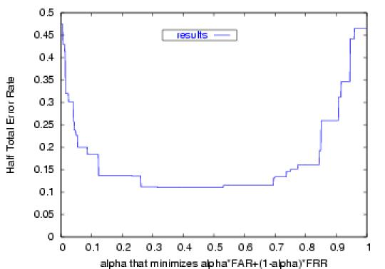
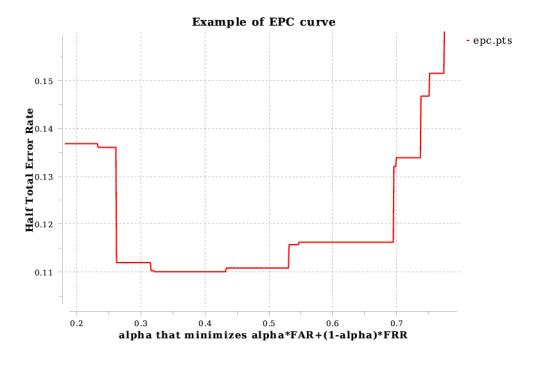

| Dowloads | ||||
|---|---|---|---|---|
| Archive | Description | Documentation | ||
| Torch3 EPC package | Torch3 EPC package: can compute EPC curves | readme epc | ||
| EPC examples | EPC biometric verification example using gnuplot | readme examples | ||
| qtplot | Plotting program written in Qt | readme qtplot | ||
| Figure Examples | ||
|---|---|---|
|  |  | |
| Figure generated by gnuplot | Figure generated by qtplot (zoom) | |